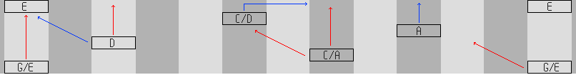
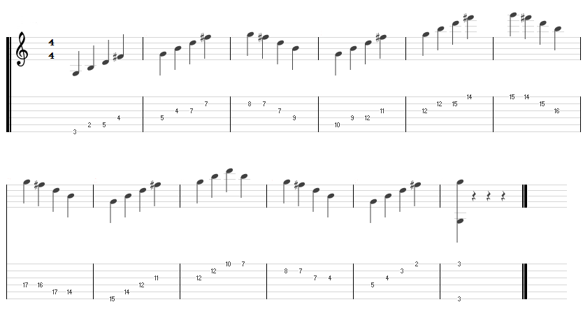
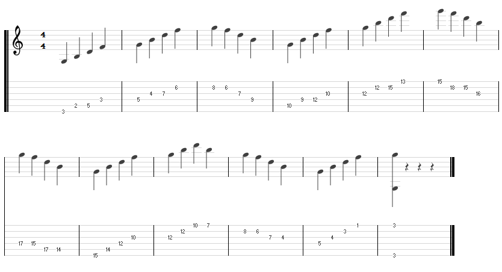
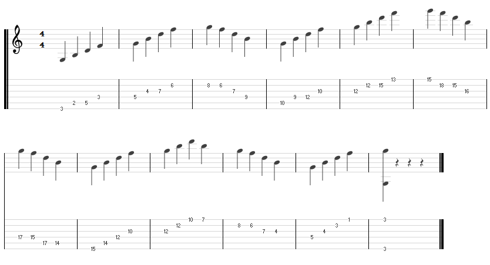

GROWL
I'd rather be playing guitar
 EN
EN
Do you ever get sick of trying to remember what you have and haven't covered with arpeggios? Do you ever wish you could traverse the neck more during solos but worry about losing your place? This one's for you! These patterns grew out of my love for the way octaves fall on the fretboard and a growing fear that I wasn't covering all the angles with arpeggios.
Just by way of explaining how I got here, let me illustrate. I used a whiteboard to draw a fretboard with 14 frets marking on all the roots for G major. Then I drew where the usual CAGED chord positions are played from these roots (in red). Sure enough, I noticed gaps (blue) where I don't usually practice! This is nothing to do with failures in CAGED as a system and more to do probably with the way I've been practising it. See the following diagram for a bit more detail. I thoroughly recommend a big white board by the way, it's a great troubleshooting tool and mine just about fits on my music stand!
FILLING THE GAPS
Time is precious and rather than targeting the 8 (non inverted) arpeggio positions that I had identified I wanted something simpler. Trying to keep track of 8 patterns along with the rest of the practice schedule just wasn't going to cut it. Then it struck me; why not stick them all together? After drawing out my options and fumbling round the fretboard I landed on a solution finally that hasn't much repetition, uses common shapes and that covers all 8 patterns.
Here are the major, minor and dominant flavours of the snake pattern, as I now call it. I've a diminished on the way but it actually leads into another topic quite well, so we'll save it for then. Play these up and then down until your fingers are raw!
 

HOW TO PRACTICE THIS PATTERN
As with all patterns I don't think the point is to learn it for it's own sake. It is VITAL that when playing the series you think about where you are playing roots, 3rds, 5ths and sevenths. Not only do we want to get ascending and descending practice of the common arpeggio shapes but we want to establish a mental structure that spans the fretboard. This can only lead us to lovely long lead runs and better fluency across neck positions.
Playing this pattern in quarter notes is dry. But go ahead, mess with it! Try triplets whilst saying "root" aloud each time you play a root note. It is harder than you think. By all means add patterns over the snake pattern too. Try playing the first note of the pattern, then the third, second then fourth, third then fifth etc...